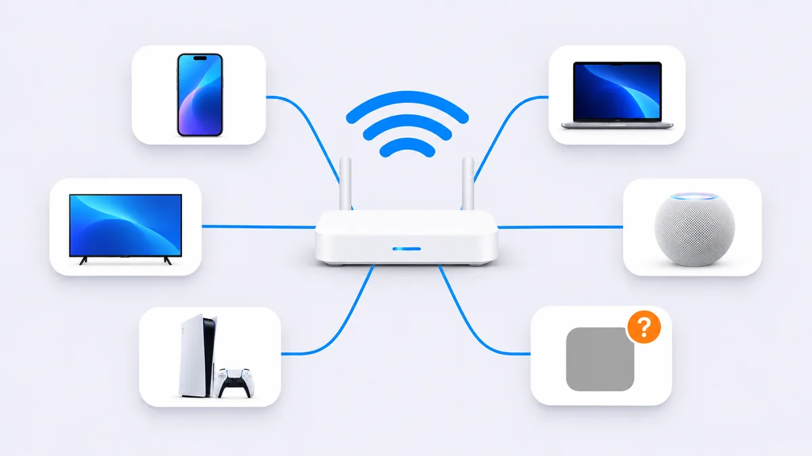

Быстрый Wi-Fi с Claude Code и Codex
ИИ найдёт, что тормозит Wi-Fi, и покажет, кто сидит в твоей сети

Начни здесь · 15 минут
Один промпт на все шаги
- Скопируй
- Открой Claude CodeCodex
- Вставь
Что понадобится
- Компьютер в домашнем Wi-Fi и Claude Pro
- Компьютер в домашнем Wi-Fi и любой ChatGPT
- Пароль роутера с наклейки, вводишь только ты
- Claude спрашивает перед каждым изменением
- Codex спрашивает перед изменениями: об этом просит наш промпт
- Интернет может пропасть на минуту
Шаг 1 из 4
Открой Claude Code
Скачай с claude.com/download и пройди по кнопкам
- Code
- Local
- Open folder…
- Manual
Подробнее
- Вкладка Code вверху боковой панели
- Под полем ввода Local, потом Open folder… и пустая папка home-wifi
- Там же режим Manual: Claude спрашивает разрешение перед каждой командой, которая что-то меняет
irm https://claude.ai/install.ps1 | iexcurl -fsSL https://claude.ai/install.sh | bashШаг 1 из 4
Открой Codex
Скачай приложение ChatGPT и пройди по кнопкам
- Codex
- Папка home-wifi
- Ask for approval
Подробнее
- Выбери Codex в выпадающем списке ChatGPT
- Открой пустую папку home-wifi
- Под полем ввода выбери Ask for approval: Codex спросит, прежде чем выйти в интернет или поменять файлы вне папки
Шаг 2 из 4
Найди, что тормозит Wi-Fi
Пока ты не скажешь «да», ИИ ничего не меняет
Подробнее
Из ролика: три соседа на том же канале, что и ты
Шаг 3 из 4
Исправь по одному и замерь
Пример замера, цифры у тебя будут свои
В конце напиши
Подробнее
Пароль обычно на наклейке
Шаг 4 из 4
Проверь, кто сидит в твоей сети

Если нашлись чужие, смени пароль Wi-Fi
Подробнее
Из ролика: свои отмечаешь, остальные можно заблокировать
Готово: скорость замерена, сеть проверена
Если что-то пошло не так
Стало хуже, чем было
Напиши ИИ «Верни последнее изменение, как было». Изменение на роутере возвращается на той же странице настроек
Пропал интернет и не возвращается
Выключи роутер из розетки, подожди 30 секунд и включи. Не помогло, позвони провайдеру и спроси, нет ли сбоя на линии
Пароль с наклейки не подходит
Значит, его уже меняли. Спроси того, кто настраивал роутер. Сброс к заводским настройкам может стереть и настройки интернета
Windows не даёт ИИ список сетей Wi-Fi
Открой Параметры, раздел «Конфиденциальность», затем «Расположение». Включи доступ к местоположению и «Разрешить классическим приложениям доступ к вашему местоположению»